Prospector Lite 5.0
A Prospecting macro that plays by sight.
Prospector Lite reads the visible game screen through calibrated cues and runs the pan, dig, and shake loop with normal keyboard and mouse input. It never touches the Roblox client, and nothing about your session leaves your computer.
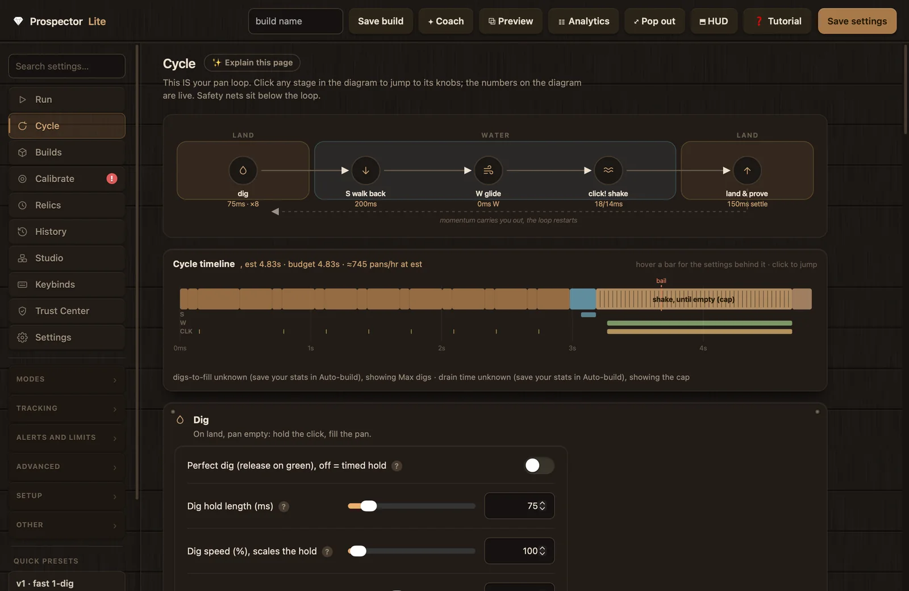
The product
Real screenshots from the build you download.
Everything below is captured from Prospector Lite 5.0.0. Click any image to enlarge it.
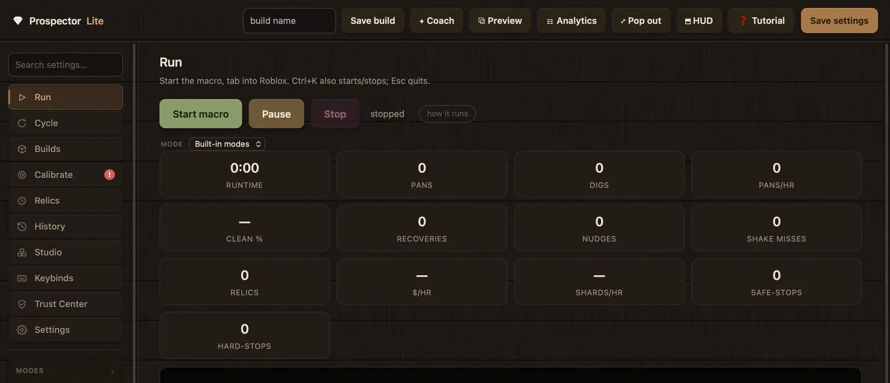
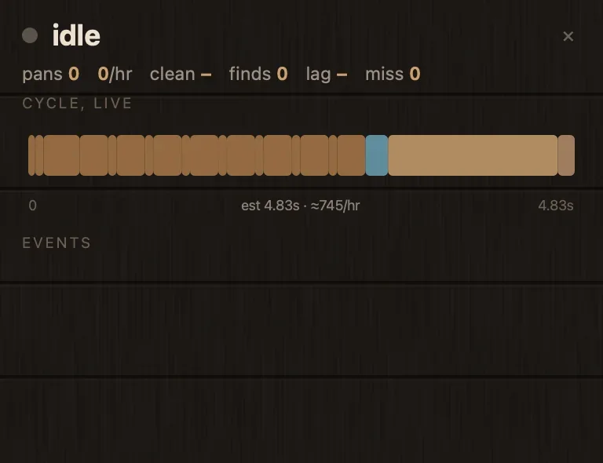
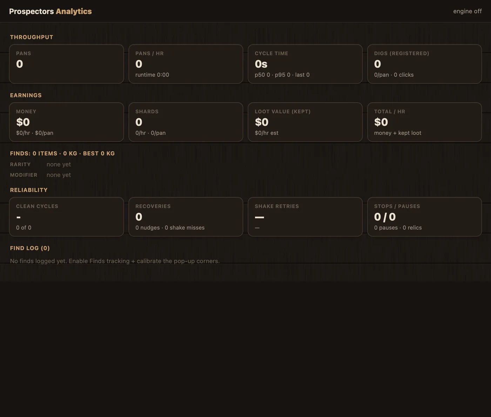
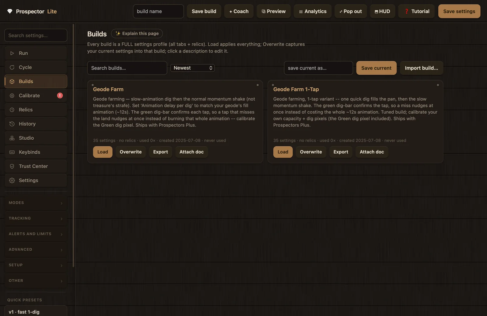
How it works
From pixels to keystrokes.
Prospector Lite runs beside the game as an ordinary desktop app. It samples the cues you can see on screen, decides what a player would do next, and presses the same keys and mouse buttons you would. That input boundary is the whole story: there is no injection, no memory reading, and no client modification.
Capabilities
Built around the loop, tuned from one page.
The Cycle page
The whole pan loop on one screen, with live numbers.
The Cycle page draws your loop as a diagram: dig on land, walk back, glide, shake, land again. Every stage shows its current timing, and the timeline below models a full pan from your settings, down to an estimated cycle time and pans per hour.
- Click any stage in the diagram to jump to its settings.
- Hover a timeline bar to see the settings behind it.
- Sliders are bounded to known-safe ranges, so tuning cannot wander into broken territory.
- Six stage cards group all 54 loop settings; each one has a written explanation.
Advanced Cue Matching
Detection that matches letter shapes, not lone pixels.
During calibration you click each white prompt word once. Every letter lights up green and becomes a pixel mask. At runtime a prompt counts as visible only when at least 85% of its mask reads white, which holds up against busy backgrounds far better than a single point.
- Three masks cover the Pan, Collect Deposit and Shake prompts.
- Masks are size exact: if the Roblox window drifts more than 2 pixels, they stand down and ask for a re-capture instead of guessing.
- The single-pixel checks stay available as a fallback.
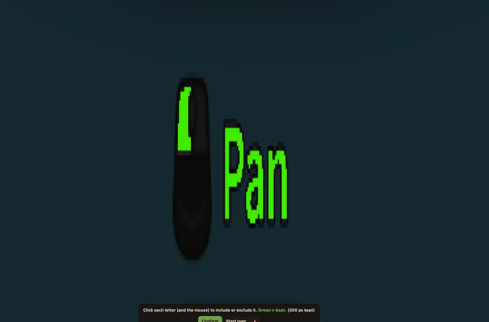
Diagnostics
When a run drifts, the app names the fix.
Sixteen rule families watch every run. Problems surface as red or yellow badges on the tab that owns the fix, and the Warnings drawer shows what happened, what was observed, the most likely cause, and the exact setting to change.
- Recommendations show current value and suggested value, with one-click Apply and Undo.
- Deep links jump straight to the calibration row or permission card involved.
- Everything is computed on your machine; none of it is transmitted anywhere.
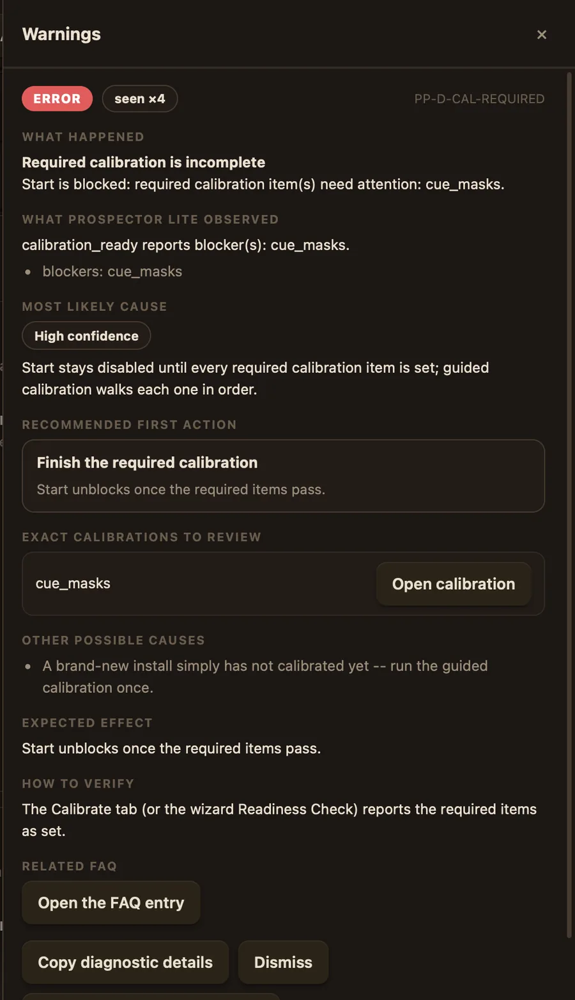
Safe Stop
Esc stops the macro instantly, and every stop path releases all held keys and buttons first. Independent watchdogs cap runaway behaviour.
Relic timers
Up to four timed items: every N minutes the macro pauses, switches slots, uses the item, and resumes. Live countdowns show on the Run tab.
Modes and builds
Treasure chest, Shards and Geodes modes, quick presets, and complete build profiles you can save, switch and share as .ppbuild files.
Analytics and history
Live pans per hour, cycle times, earnings and reliability, plus a run history that keeps your last 100 sessions. All of it stays on your machine.
Notifications, opt in
Paste your own Discord webhook for start, stop and stats alerts. Off by default, and the preview shows exactly what would be sent.
Studio block scripts
Build custom farming routines from validated blocks and run them from the same Run tab. Scripts are data, never executed as code.
Companion app
When you want to build the loop yourself, there's Prospector Studio.
Prospector Lite is the macro: install it, calibrate, press start. Studio is the workshop behind it — a visual editor where a run is a graph you can read, change, simulate and publish back into Lite. Same engine, same behaviour, nothing new to trust.
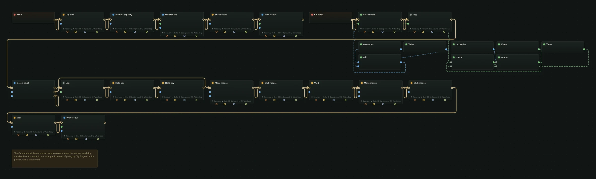
Readable first
The graph has a plain-English side.
The same program reads as ordered stages with real sentences and the settings that matter inline — so you can follow a cycle without touching a single wire. The node canvas is there when you need the precision, not as the price of entry.
- Colour-coded stages: dig, confirm, travel, shake, return.
- An estimated cycle shape across the top, from your own timings.
- A problems panel that tells you the program is valid before you run it.
- Background routines fire on their own schedule alongside the loop.
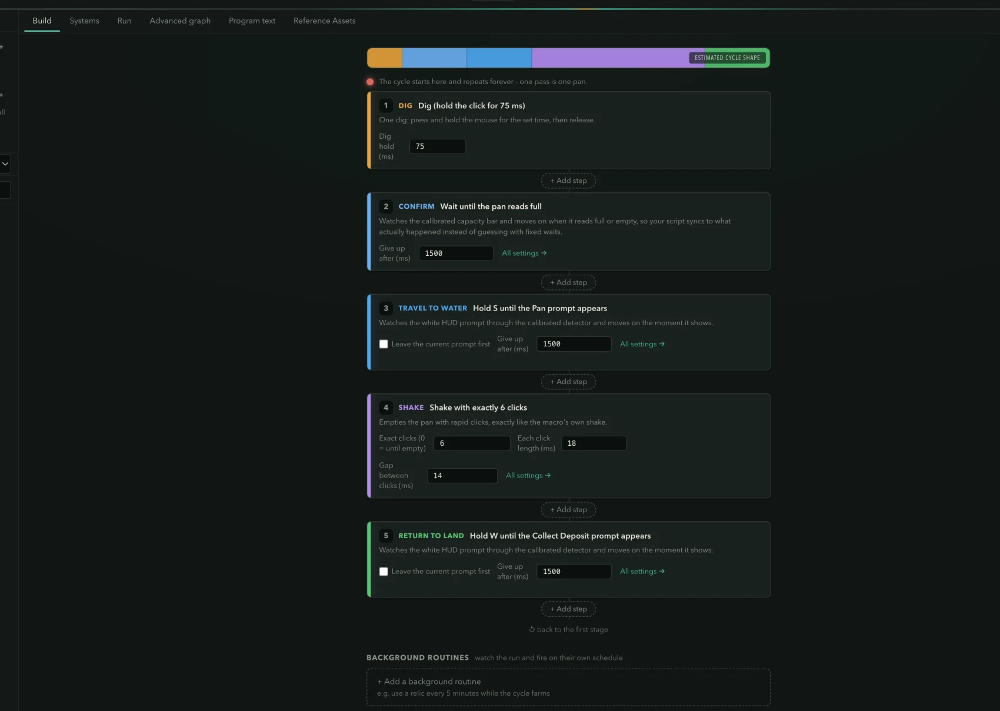
It compiles to a real program
Nodes, text and engine are the same thing.
The canvas compiles to PPScript — a versioned, validated program format the engine executes directly. Edit the text and the graph rebuilds from it; edit the graph and the text follows. There is no separate “export” step that can drift.
- 67 executable operations, from a single dig click to true parallel branches.
- Variables, expressions and the full set of boolean gates.
- Simulate a run with no input posted at all, then compare it against the real thing.
- Publish straight back into Prospector Lite as a build it can run.
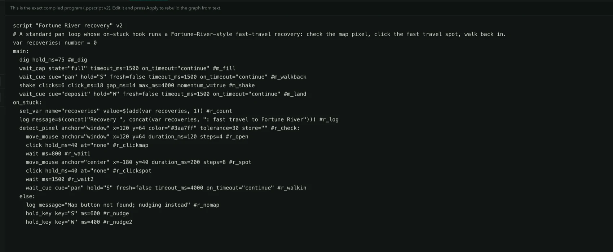
Availability
macOS, signed and notarized.
Studio 1.0.0 is built for Apple Silicon, signed with a Developer ID certificate and notarized by Apple, so it opens with no warnings. A Windows build is not available yet. You do not need Studio to use Prospector Lite — Lite ships with its own builds and runs on Windows and macOS.
Trust and security
Clear boundaries you can verify.
The boundary is simple: pixels in, normal keystrokes and clicks out, plus a listen-only stop hotkey. Each claim below is backed by public source code and an in-app test in the Trust Center.
What it uses
- Visible screen pixels of the display Roblox is on, sampled at calibrated points and small user-drawn regions.
- Normal keyboard and mouse input, the same events your own hands would produce.
- A listen-only stop hotkey, so Esc works even while Roblox has focus. It does not log what you type.
- Local files only. Settings, calibration and run history are plain JSON on your disk, listed in the Trust Center with open, export and delete actions.
What it never does
- Inject scripts into Roblox, or read or write another process's memory.
- Modify the Roblox client or its files, or intercept its network traffic.
- Install drivers, services or launch agents, or ask for administrator rights.
- Phone home. Zero network requests by default: no update checks, no analytics, no telemetry, no IP or location collection. The only network paths are opt in and point at servers you choose.
Downloads
Prospector Lite 5.0.0
Each platform has a guided download page that lists every file, walks through the SHA-256 checksum, and covers the install. The files themselves live in one place: the GitHub release. Builds are currently unsigned on both platforms, so the checksum is the integrity mechanism; verify before you run.
Windows
- Version5.0.0 · 2026-08-08
- InstallerPer user, no administrator rights
- PortableUnzip anywhere; nothing is installed
- SigningUnsigned; SmartScreen will warn
unsignedVerify the checksum first, then choose More info and Run anyway in SmartScreen. Never disable SmartScreen itself.
macOS
- Version5.0.0 · 2026-08-08
- ArchitectureApple Silicon (arm64)
- PermissionsScreen Recording, Accessibility, Input Monitoring
- SigningUnsigned; not notarized yet
unsignedVerify the checksum first. On first launch, right-click the app, choose Open, then Open again. Never disable Gatekeeper.
Setup
Four steps from download to first run.
A five-page wizard walks you through it: Welcome, Trust and Permissions, Guided Calibration, Readiness Check, then the app itself. The wizard is resumable and skippable, and skipping never weakens a safety check. Start Macro simply stays disabled until the required items pass.
- Download and verifyThe guided download page lists every file and walks the SHA-256 check line by line.
- PermissionsmacOS needs three permissions, each explained and tested in the app. Windows has nothing to grant.
- Guided CalibrationRequired steps in order, with example screenshots. Auto-calibration covers the basics; the guide makes them exact.
- Readiness CheckVerifies permissions, calibration, your data folder and the build identity, and links straight to anything that needs fixing.
Trust and Permissions
Each permission explains itself before you grant it.
Every permission card shows what the capability can access, what is kept on disk, and what leaves your computer, which is nothing. Checking status never triggers an OS prompt; a prompt can only appear after you click a clearly labelled button.
- Screen Detection reads game pixels. Calibration stores coordinates and reference colours, not images.
- Keyboard and Mouse Control is output only; it does not observe your input.
- Safe Stop and Global Hotkeys is a listen-only tap so Esc always works.
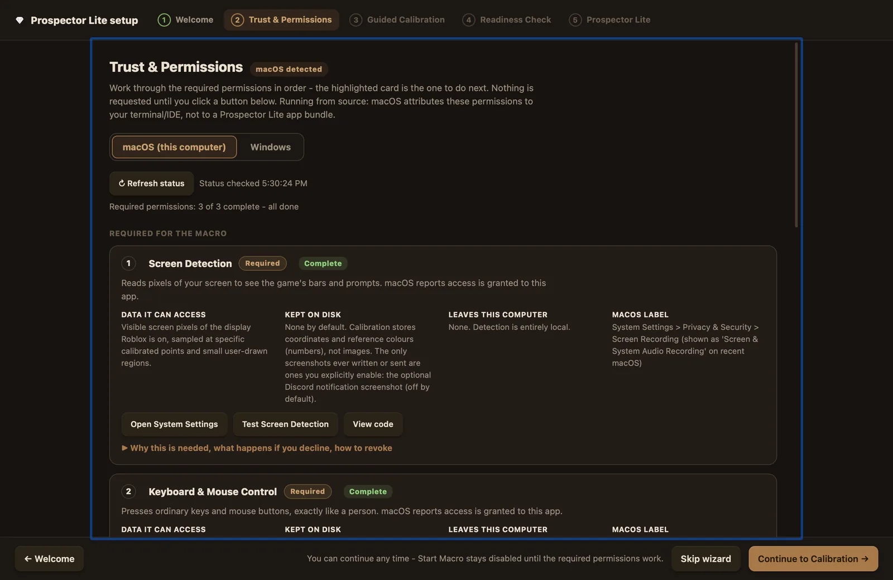
Documentation
The wiki covers every setting and every screen.
Full guides for installation, calibration, tuning, analytics and troubleshooting, written against the shipping app. If a setting exists in Prospector Lite, it is documented here.
Getting started
Install, first launch, permissions on macOS and Windows, and what the setup wizard does at each step.
Read the guideCalibration
Every calibration step with real screenshots, from the capacity bar to Advanced Cue Matching and OCR regions.
Read the guideSettings reference
Every setting explained one by one: what each does, when to raise or lower it, and what it trades off.
Open the referenceModes and builds
Treasure chest, Shards and Geodes modes, the quick presets, and how build profiles are saved and shared.
Read the guideAnalytics and HUD
What every counter means, how the Analytics window computes its numbers, and how to read the HUD and pop-out pill.
Read the guideInterface reference
A tour of every tab and window: the Run and Cycle pages, the Coach, the Studio editor, keybinds and the Trust Center.
Read the guideTrust and permissions
What each OS permission is for, how to verify a download, where your data lives, and what the app never does.
Read the guideTroubleshooting and FAQ
Symptom by symptom: detection misses, timing problems, permission failures, and the questions everyone asks.
Read the guideWiki home
The full documentation index, including the Cycle page walkthrough and the Studio scripting overview.
Browse everythingThe first public stable release: guided setup with a real Skip, the diagnostics and recommendations system, validated capacity calibration, Advanced Cue Matching, and a public source repository wired into every View Code button. Released 2026-08-08.
Bugs and questions go to GitHub Issues; see SUPPORT.md for what to include and what never to post. Security vulnerabilities: report privately. In the app, the tutorial, FAQ browser and Trust Center answer most questions.